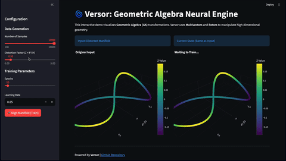

Versor: A PyTorch Framework for Geometric Algebra Deep Learning
[!IMPORTANT] Notice: No Affiliation with arXiv:2602.10195
This project (Versor) is the original, independent research work of Eunkyum Kim. We have no affiliation, association, or connection with the paper titled "Versor: A Geometric Sequence Architecture" (arXiv:2602.10195) or its authors.
Any claims of performance or hardware implementations made in that paper (under the name 'VersorAI') do not represent this project. We have formally reported the misuse of our project's name and identity to the relevant institutions.


"There is a ceiling above standard Deep Learning that no one saw. Versor opens the door above it."

At a Glance
Versor replaces standard matrix multiplications with Geometric Algebra (Rotor) operations to preserve the topological structure of data. It provides the building blocks for the Geometric Blade Network (GBN) — model architectures that go beyond unconstrained linear transformations, using pure, manifold-aligned geometric rotations via Clifford Algebra and Rotors.
| Task | Algebra | Key Metric | Result | Note |
|---|---|---|---|---|
| Symbolic Regression (First_Principles) | \(Cl(4,0)\) | Median R² | 0.9525 | Iterative geometric unbending |
| MD17 (Molecular Dynamics) | \(Cl(3,0,1)\) PGA | Energy MAE / Force MAE | — | Experimental |
| LQA (Logical Query Answering) | \(Cl(4,1)\) CGA | Chain / Negation | 100% @len1–13 / 64.6% | Geometric ALU on frozen embeddings |
| DEAP EEG (Emotion) | \(Cl(3,1)\) Minkowski | RMSE | 0.2561 / 0.2335 | Cross / Within-subject LOSO |
Core Idea
Rotors ( \(R = \exp(-B/2)\) ) perform pure geometric rotations via the sandwich product (\(x \to R x \tilde{R}\)), preserving manifold structure where standard weight matrices may inadvertently deform it.
What's Built
- Cl(p,q,r) kernel with null dimension support for Projective GA
- Signature-aware exp map — closed-form elliptic/hyperbolic/parabolic (no Taylor series)
- Hermitian metrics for positive-definite inner products in any signature
- Multi-Rotor GBN with K weighted rotors (geometric spectral decomposition)
- Rotor Gadget — parameter-efficient linear replacement (~63% param reduction)
- Automatic Metric Search via GeodesicFlow + bivector energy analysis → (p,q,r) discovery
- CGA embedding Cl(n+1,1) for conformal geometric algebra
- Riemannian Adam optimizer — Adam momentum in the Lie algebra (bivector space)
- Geometric activations — GeometricGELU, GradeSwish, GeometricSquare
- Rotor-to-symbolic-formula translation — direct readout of trained weights as equations
- Iterative geometric unbending — 4-phase SR pipeline with blade rejection
- CliffordGraphConv for molecular graphs
- Bivector pruning for geometric sparsity
- GeometricTransformerBlock with entropy-gated attention
For code examples of each innovation, see docs/innovations.md.
Key Features
- Metric-Agnostic Kernel: Supports Euclidean \(Cl(p, 0)\), Minkowski \(Cl(p, q)\), Projective \(Cl(p, 0, r)\), and Conformal \(Cl(n+1, 1)\) algebras out of the box.
- Geometric Layers:
RotorLayer,MultiRotorLayer,CliffordLinear,CliffordGraphConv,CliffordLayerNorm,BladeSelector,RotorGadget. - Novel Activations:
GeometricGELU(magnitude-based),GradeSwish(per-grade gating),GeometricSquare(gated self-product). - Automatic Metric Search: Finds optimal \((p, q, r)\) signature based on data topology via GBN probes.
- Riemannian Optimization:
RiemannianAdamandExponentialSGDwith manifold retraction. - Geometric Sparsity:
prune_bivectorsfor compression of geometric layers.
Installation
Versor requires Python 3.9+ and PyTorch.
# Clone the repository
git clone https://github.com/Concode0/Versor.git
cd Versor
# Install core dependencies
uv sync
# Install with optional dependency groups
uv sync --extra viz # matplotlib, seaborn, scikit-learn, plotly, imageio
uv sync --extra examples # transformers, pillow, scikit-learn, matplotlib
uv sync --extra graph # torch-geometric (for molecular GNN tasks)
uv sync --extra demo # streamlit, plotly
uv sync --extra all_tasks # All task dependencies (graph, pdbbind, weather, cad)
uv sync --extra all # everything
Quick Start
Using Versor Layers in Your Own Model
import torch
from core.algebra import CliffordAlgebra
from layers.primitives.rotor import RotorLayer
from layers.linear import CliffordLinear
from functional.activation import GeometricGELU
# Create a 3D Euclidean Clifford Algebra
algebra = CliffordAlgebra(p=3, q=0, device='cpu')
# Build a model with geometric layers
rotor = RotorLayer(algebra, channels=4)
linear = CliffordLinear(algebra, in_channels=4, out_channels=8)
activation = GeometricGELU(algebra, channels=8)
# Input: [Batch, Channels, 2^n] multivectors
x = torch.randn(32, 4, algebra.dim)
out = activation(linear(rotor(x)))
Running Tasks via CLI
Versor uses Hydra for configuration management:
# Run tasks
uv run main.py task=sr training.epochs=100
uv run main.py task=md17 training.epochs=100
uv run main.py task=lqa probe=chain training.epochs=50
uv run main.py task=deap_eeg training.epochs=100
# Override parameters
uv run main.py task=sr algebra.p=4 training.lr=0.001
Interactive Demo (Streamlit)
streamlit run examples/demo.py
Tasks
Symbolic Regression (SR)
Discovers closed-form symbolic formulas from numerical data using iterative geometric unbending.
| Property | Value |
|---|---|
| Algebra | \(Cl(4,0)\) |
| Pipeline | probe → train → extract → subtract → refine (4 phases) |
| Datasets | SRBench 2.0 (first_principles, blackbox) |
| Result | Median R² = 0.9525 on 15 First Principles equations |
Analysis: While the median R² of 0.9525 on First Principles equations is a decent result, this is still an early version of the SR pipeline. Much of the underlying logic can be further improved, and performance can be enhanced through parameter tuning — for example, by redefining the entry condition for implicit mode. The current version of SR should therefore be understood primarily as a structural proposal: a demonstration that iterative geometric unbending is a viable and interpretable framework for symbolic regression. The most important properties of this approach are interpretability (formulas are read directly from trained rotor weights) and physically plausible structure (rotor composition mirrors the composition of physical symmetries). The current implementation suffers from numerical instability and difficulty handling high-dimensional input data, both of which are planned for improvement in future versions.
Speed-to-Performance Ratio: For the 12 first_principles datasets, the entire execution took roughly 5 minutes (avg. ~23s per dataset). This demonstrates a structurally different efficiency from existing Genetic Algorithm-based SR models, proving that Geometric Unbending computes laws deterministically rather than searching for them stochastically.
uv run main.py task=sr
MD17 (Molecular Dynamics)
Multi-task energy + force prediction with conservative constraint (\(F = -\nabla E\)).
| Property | Value |
|---|---|
| Algebra | \(Cl(3,0,1)\) — PGA for SE(3) rigid-body motions |
| Molecules | aspirin, benzene, ethanol, malonaldehyde, naphthalene, salicylic acid, toluene, uracil |
| Status | Experimental |
uv run main.py task=md17
LQA (Logical Query Answering)
A geometric arithmetic logic device (~228K params) that operates directly on frozen latent embeddings. Rather than building an end-to-end LLM, LQA isolates the question: what can geometric algebra do to a latent space that flat linear algebra cannot?
Each probe tests a specific algebraic operation — composition, asymmetry, negation — revealing both the power of the geometric approach and the hard ceiling imposed by flat embeddings.
| Property | Value |
|---|---|
| Algebra | \(Cl(4,1)\) Conformal GA |
| Probes | chain (CLUTRR), entailment (HANS), negation (BoolQ) |
| Chain | 100% accuracy at all lengths 1–13 |
| Negation | 64.6% — orig 65.2%, neg 63.9% (gap 1.3%) |
| Entailment | 52.6% — ent 81.4%, non-ent 23.8% |
Chain (composition): Perfect 100% accuracy across all chain lengths 1–13. Rotor composition \(R_1 R_2 \cdots R_k\) naturally represents multi-hop relational chains — the algebraic structure matches the task structure exactly.
Negation & Entailment (encoder ceiling): These probes deliberately expose the limits of flat embeddings. MiniLM maps "Is X?" and "Isn't X?" to cosine similarity 0.967 — the embedding shifts only 18% of inter-question distance under negation. An MLP baseline on the same embeddings achieves 59.5% (vs GBN 64.6%) with a comparable 1.0% negation gap, confirming the gap is bounded by the encoder, not the geometric model. The entailment probe shows a similar pattern: the HANS adversarial set exploits lexical overlap heuristics that MiniLM's flat space cannot distinguish from genuine entailment. See scripts/analyze_minilm_negation.py for the full analysis.
Next step: Replace the frozen MiniLM encoder with a geometric embedding pipeline, removing the flat-space bottleneck entirely.
uv run main.py task=lqa probe=chain training.epochs=50
uv run main.py task=lqa probe=negation training.epochs=10
uv run main.py task=lqa probe=entailment training.epochs=10
DEAP EEG (Emotion Classification)
EEG emotion classification using phase-amplitude representation in Minkowski algebra with mother manifold alignment across subjects.
| Property | Value |
|---|---|
| Algebra | \(Cl(3,1)\) Minkowski |
| Input | 32-channel EEG + 8 peripheral channels |
| Targets | Valence, Arousal, Dominance, Liking |
| Evaluation | LOSO (cross-subject) and within-subject (80/20 split), 32 subjects |
uv run main.py task=deap_eeg training.epochs=100 # within-subject
uv run main.py task=deap_eeg evaluation.mode=cross_subject training.epochs=100 # cross-subject
Results (32 subjects, 100 epochs)
Primary metric: RMSE (labels normalized to [0,1]). F1 scores are omitted from the primary analysis due to label imbalance bias — valence and arousal predictions collapse to a single class at the 0.5 threshold, yielding F1=0.00 under cross-subject generalization. This is a known artifact of DEAP's skewed label distribution (most trials cluster above the neutral midpoint), not a model failure.
| Dimension | Cross-subject RMSE | Within-subject RMSE | Δ (cross − within) |
|---|---|---|---|
| Valence | 0.2486 ± 0.054 | 0.2663 ± 0.079 | −0.0177 (cross better) |
| Arousal | 0.2409 ± 0.059 | 0.2096 ± 0.068 | +0.0314 |
| Dominance | 0.2533 ± 0.073 | 0.2123 ± 0.065 | +0.0410 |
| Liking | 0.2815 ± 0.069 | 0.2459 ± 0.076 | +0.0356 |
| Mean | 0.2561 | 0.2335 | +0.0226 (+8.8%) |
Key observation — the cross/within RMSE gap is remarkably small. The mean difference is only 0.023 RMSE units (8.8% relative), despite cross-subject training using data from 31 other subjects and predicting a completely held-out subject. This suggests the Minkowski rotor representation captures subject-invariant affective structure: the manifold geometry of EEG phase-amplitude coupling is largely shared across individuals, and the rotor sandwich product preserves that topology under subject shift.
Valence anomaly: cross-subject RMSE (0.2486) is actually lower than within-subject (0.2663), a reversal of the usual pattern. This reflects the well-known DEAP valence difficulty — valence labels are highly inter-subject variable, so within-subject training can overfit to individual rating biases, whereas cross-subject training forces the model toward the more stable population-level valence manifold.
F1 context: Dominance and Liking show healthy F1 (0.70–0.76) in both modes because their label distributions are less skewed. Valence and arousal F1 collapses to near-zero under cross-subject evaluation, consistent with the class-imbalance literature on DEAP.
Examples (Synthetic/Demo Tasks)
Synthetic experiments demonstrating GA concepts are in the examples/ directory:
# Run synthetic tasks
uv run python -m examples.main task=manifold training.epochs=500
uv run python -m examples.main task=hyperbolic training.epochs=500
uv run python -m examples.main task=sanity
| Example | Algebra | Description |
|---|---|---|
| Manifold | \(Cl(3,0)\) | Flatten a figure-8 manifold (100% topology restoration) |
| Hyperbolic | \(Cl(1,1)\) | Reverse a Lorentz boost in Minkowski spacetime |
| Sanity | \(Cl(3,0)\) | Verify algebra correctness (identity learning) |
Configuration
Configuration files are in conf/ (main tasks) and examples/conf/ (synthetic tasks).
# Override any parameter from CLI
uv run main.py task=sr algebra.p=4 training.lr=0.001
Project Structure
Versor/
├── core/ # Math kernel (CliffordAlgebra, metric, search, decomposition, CGA)
├── layers/ # Neural layers (Rotor, MultiRotor, Linear, GNN, Norm, RotorGadget)
├── functional/ # Activations (GeometricGELU, GradeSwish, GeometricSquare) & losses
├── models/ # Task-specific architectures
│ └── sr/ # SR models (SRGBN, translator, unbender, grouper, estimator)
├── optimizers/ # Riemannian optimizers (RiemannianAdam, ExponentialSGD)
├── tasks/ # Task runners (SR, MD17, LQA, DEAP EEG)
├── datalib/ # Data loaders (PMLB, MD17, CLUTRR/HANS/BoolQ, DEAP)
├── conf/ # Hydra configs for main tasks
├── docs/ # Documentation
│ └── tasks/ # Per-task specifications (LQA, DEAP EEG)
├── examples/ # Synthetic demos and interactive Streamlit app
│ ├── tasks/ # Manifold, Hyperbolic, Sanity
│ ├── datasets/ # Synthetic data generators
│ └── conf/ # Hydra configs for example tasks
├── tests/ # Unit & property tests
└── main.py # CLI entry point
Documentation
- Philosophy: Why Geometric Algebra? The "unbending" paradigm.
- Tutorial: Step-by-step guide to building with Versor.
- Mathematics: Clifford Algebra, Rotors, Metric Signatures.
- Innovations (Code Examples): 10 code-illustrated innovations that make Versor unique.
- FAQ: Common questions and troubleshooting.
- Roadmap: Upcoming work and research directions.
License & Intellectual Property
This project is licensed under the Apache License 2.0.
Notice on Patents: The core GBN architecture is covered by KR Patent Application 10-2026-0023023. By releasing this under Apache 2.0, we provide a perpetual, royalty-free patent license to any individual or entity using this software.
Citation
@software{kim2026versor,
author = {Kim, Eunkyum},
title = {Versor: Universal Geometric Algebra Neural Network},
url = {https://github.com/Concode0/versor},
version = {0.1.0},
year = {2026},
month = {2},
license = {Apache-2.0},
note = {ROK Patent Application 10-2026-0023023 (Geometric Blade Networks)}
}
Reference:
Pence, T., Yamada, D., & Singh, V. (2025). "Composing Linear Layers
from Irreducibles." arXiv:2507.11688v1 [cs.LG]